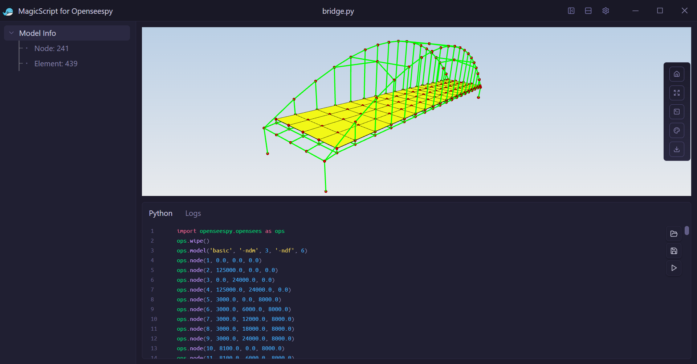
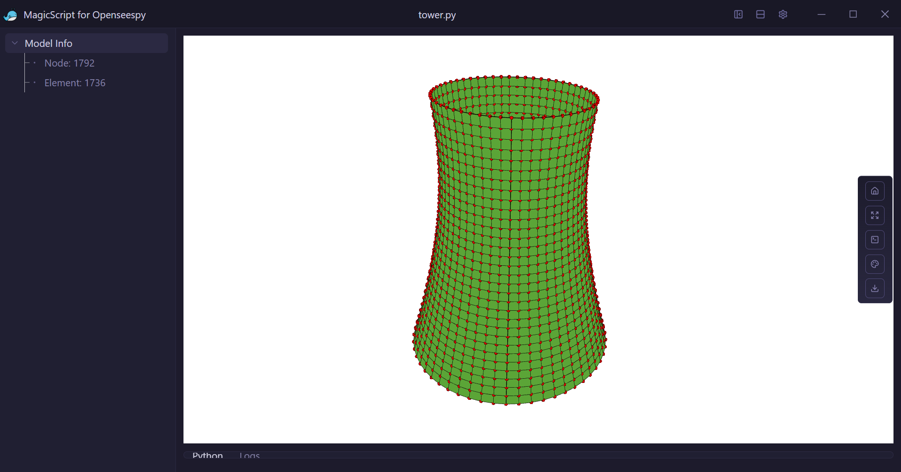
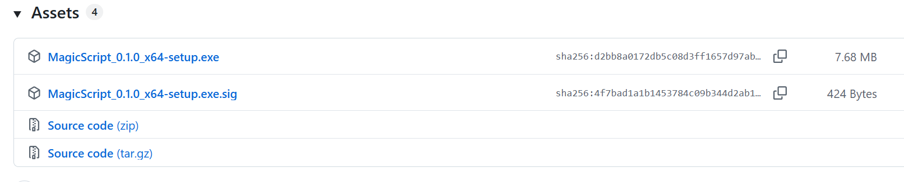

简介
MagicScript: OpenSeespy模型查看器

MagicScript用于查看和分析 OpenSeespy 模型的可视化工具，提供直观的3D交互体验。支持模型渲染、模型交互等功能，为结构工程分析提供可视化支持。
开发初衷
- 顺手的OpenSees前后处理太少；
- 本人偏爱脚本建模, 在可重用、参数化、效率方面要比GUI交互式建模高很多，故本软件只专注可视化模型，不会开发交互式前处理建模；
- 本人认为这种小工具很适合云化，可视化采用Web技术开发，方便以后可能的云化项目重用。之所以目前采用桌面软件进行分发，主要是云化方案前期投入较高，开发成本也较高。
界面预览


开发路线图
✅ v0.1.x - 已完成
- ✓ 搭建基础框架
- ✓ 实现简单脚本的执行
- ✓ 实现简单模型可视化
☐ v0.2.x - 开发中
- ⭕︎ 增强3D模型视图交互能力
- ⭕︎ 增强模型树功能
- ⭕︎ 实现模型的边界条件、载荷的渲染
☐ v0.3.x - 计划中
- ⭕︎ 支持Tcl/TK模型
- ⭕︎ 梁截面的实体渲染
- ⭕︎ 纤维束截面的渲染
☐ v0.4.x - 计划中
- ⭕︎ 后处理结果的提取与渲染
关于更新
有新版本会弹出Toast提示，但不会自动更新，需用户手动下载安装。主要原因是MagicScript发版使用github，众所周知的原因自动更新大部分情况下会失败。 
release包下载地址MagicScript for Openseespy Release